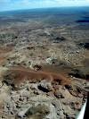
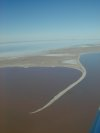

|
The day started pretty disastrous - the evening before we had discovered that the aeronautical chart for the Broken Hill area, which we were about to fly over, was missing - we had all the WAC's for entire Australia except this one. We didn't want to fly over mountains, the Flinders Ranges to be specific, without this map so we tried to figure out ways to get our hands on a copy. Since it is a special aviation map, no normal bookstore will have it in stock. Getting sent one would take up to several days, so we started asking everybody (people in restaurants, the tourist information office, our hosts - everybody) if they knew any pilots in town - thinking that there would be a good chance that a pilot in this area would have this particular chart. Three pilots, but either they weren't in town or didn't have the chart. Finally I found a charter company in William Creek, a town about 100km east of Coober Pedy that had the Broken Hill WAC and was willing to borrow it to us, so we packed our things and got a lift to the airport. Ready to leave, our luck was obviously changing - a Cessna landed and on that plane was a version of the item we had been looking for so long. And even better - on the plane was Gordon Macrae, a retired WWII fighter and later Qantas pilot who was so friendly to sell us the WAC! Thanks Gordon!!! So the trip could continue as planned.
 A couple of orbits over Coober Pedy and off we went towards the east. We flew over William Creek (but fortunately didn't have to land there) and continued heading for Lake Eyre. A beautiful salt lake

that has been used to set land speed records before. It's usually empty, but for the fourth time in more then one hundred years it is actually holding water now.
We had made arrangements for staying at the Leigh Creek Tavern in Leigh Creek. They had told us they would come and pick us up from the airstrip free of charge. When we called they all of a sudden wanted $15 for the pick up. I 'kindly' thanked for the offer and said that I would call the Leigh Creek Hotel (aka Copley Pub) instead. That was apparently incentive enough to offer us the free ride after all, but to late ... we went to the Copley Pub - a very good choice btw. Everybody that is travelling by air seems to go here. Amongst them were Bee, Rickie, and Rex with whom we had a very nice dinner.


| |
|
{kind=link}
{kind=link}